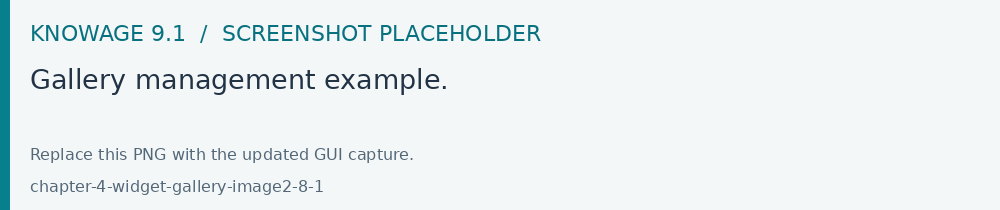
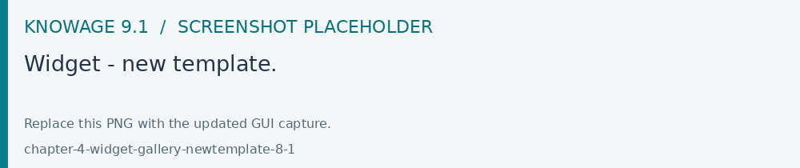
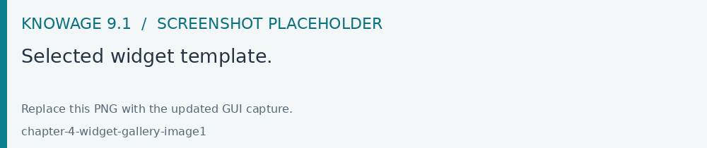
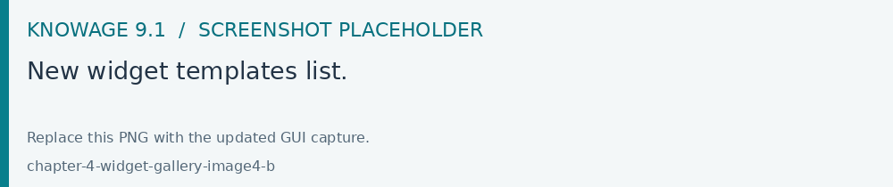
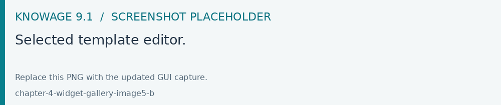

Widget gallery
Open Modules > Catalogs > Gallery Management to maintain reusable widget templates. Match a template’s type to the Dashboard editor that will consume it, test its datasets and parameters, then save and reuse it from a compatible widget.
The Widget Gallery is a feature available since version 8.0 that allows users and editors to create a template and share it in multiple dashboards. By creating a template and then using it within a dashboard, users will have the ability to create complex dashboard elements quite easily and quickly while maintaining a common basic template.
This functionality is available for the following types of widgets:
HTML
Custom Chart
Python
Gallery management
To open the Gallery Management, select Gallery Management from the CATALOGS option of the Knowage main menu. The first step consists in creating a new template or importing a template not available in the list.

Fig. 703 Gallery management example.
The image below, shows the information to be filled in when adding a new template.

Fig. 704 Widget - new template.
Using import you will see a dialog to choose the template to be imported. Clicking “import” it will be added to the current list.
A Template is a json file containing a collection of properties describing the widget and the code componing it.
The following fields will be present:
Name: Mandatory information, representing the name of the widget template
Type: Mandatory information, specifying the widget type. As shown in the above image, there are three available types
Output type: only for Python widgets: HTML or Image values available.
Description: Optional information that will be visible as a tooltip on the dashboard selection.
Tags: Optional information, consisting in a list of unique tags to easily categorize templates. Search functionality using tags too. Allowed values for tags are uppercase and lowercase letters, numbers, ‘-’, ‘_’ whereas the space character is not allowed.
Image: Optional information, representing the image of the widget that will be shown on the dashboard selection. The maximum image size is 200k.
Code section: Mandatory information, representing the code to be written in the editor box.
Editors will look like different, depending on the type of widget: - HTML **: HTML, CSS editors - **Chart: HTML, CSS and JS editor - Python: Python code editor

Fig. 705 Selected widget template.
Use the Save icon to save the template.
Dashboard gallery
When adding a widget in a dashboard, the wizard shows a Gallery tab, containing a first empty template and then a set of available templates showing their image, tags and eventually the description. The empty template allows users to create a custom widget without starting from an already created template. The Gallery tab would not be available if any templates were not already formerly saved and therefore available to be used.

Fig. 706 New widget templates list.
Clicking on a given template, the code is automatically copied in the new widget template. The user just needs to make some changes some to the code to customize and create the desired widget.

Fig. 707 Selected template editor.